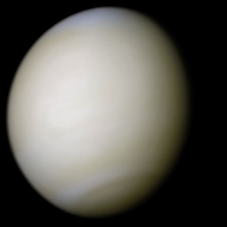

金星（英语、拉丁语：Venus，天文符号：♀），在太阳系的八大行星中，是从太阳向外的第二颗行星，轨道公转周期为224.7地球日，它没有天然的卫星。在中国古代称为太白、明星或大嚣，另外早晨出现在东方称启明，晚上出现在西方称长庚。到西汉时期，《史记�6�4天官书》作者天文学家司马迁从实际观测发现太白为白色，与“五行”学说联系在一起，正式把它命名为金星。它的西文名称源自罗马神话的爱与美的女神，维纳斯（Venus），古希腊人称为阿佛洛狄忒，也是希腊神话中爱与美的女神。金星的天文符号用维纳斯的梳妆镜来表示。 它在夜空中的亮度仅次于月球，是第二亮的天然天体，视星等可以达到 -4.7等，足以照射出影子。由于金星是在地球内侧的内行星，它永远不会远离太阳运行：它的离日度最大值为47.8°。